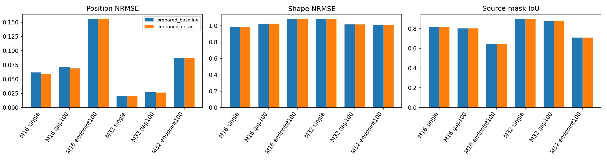

Open development. Track 2 remains on hold. Parameters and PCA were fitted using training participants only. Validation has been used repeatedly in prior research and remains exploratory. These are withheld source-reconstruction tests; no independent physical motion/contact/identity or unseen-RGB segmentation claim is made.

| Controls | Holdout | Method | Position NRMSE | Shape NRMSE | Scale NRMSE | Mask IoU | BF 2 annotation px |
|---|---|---|---|---|---|---|---|
| 16 | single | finetuned_detail | 0.05926 | 0.98452 | 0.09783 | 0.81928 | 0.48508 |
| 16 | single | prepared_baseline | 0.06151 | 0.98452 | 0.09783 | 0.81800 | 0.48141 |
| 16 | gap100 | finetuned_detail | 0.06860 | 1.02518 | 0.10147 | 0.80263 | 0.46223 |
| 16 | gap100 | prepared_baseline | 0.07063 | 1.02518 | 0.10147 | 0.80150 | 0.45761 |
| 16 | endpoint100 | finetuned_detail | 0.15604 | 1.08263 | 0.23127 | 0.64366 | 0.24721 |
| 16 | endpoint100 | prepared_baseline | 0.15638 | 1.08263 | 0.23127 | 0.64344 | 0.24735 |
| 32 | single | finetuned_detail | 0.02009 | 1.08807 | 0.04353 | 0.90183 | 0.65502 |
| 32 | single | prepared_baseline | 0.02049 | 1.08807 | 0.04368 | 0.89994 | 0.65360 |
| 32 | gap100 | finetuned_detail | 0.02623 | 1.01689 | 0.04674 | 0.88040 | 0.61212 |
| 32 | gap100 | prepared_baseline | 0.02669 | 1.01689 | 0.04709 | 0.87736 | 0.60616 |
| 32 | endpoint100 | finetuned_detail | 0.08716 | 1.01069 | 0.15393 | 0.71088 | 0.32554 |
| 32 | endpoint100 | prepared_baseline | 0.08721 | 1.01069 | 0.15393 | 0.71075 | 0.32538 |
Same retained observations and targets for each method. Nearest/linear baselines and all attempted probes remain in the Parquet evidence. Missing/unsupported probes are reported separately. Shape errors require target compatibility; mask metrics retain topology-change targets. Position residuals remain endpoint-neutral. Separate local-CV kinematics remain authoritative for the declared source-position estimator.
Full metrics · Training selection · Train-only PCA · Numerical checks/support · Input provenance